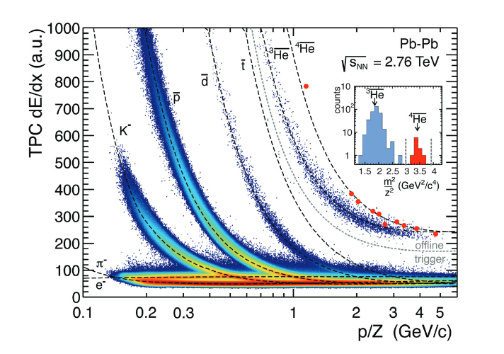
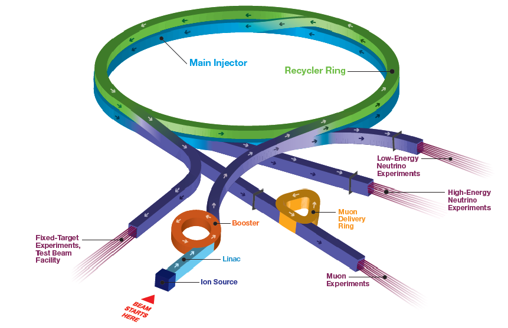

Particle Physics Detector Technology
Designing and building a particle physics experiment is a duanting task. Usually these experiments are very expensive, need to be very accurate and usually need to be able to test several things at the same time to justify the cost.
Natural Sources of Neutrino Radiation
There are several naturally occurring sources of radiation available to a particle physicist. While these tend to be abundant and free to use, the energy ranges might be inconvenient or they are unpredictable. Early particle experiments tend to use naturally occurring sources of radiation, but as time goes on, more precise measurements with neutrinos produced in labs or reactors are used.
Cosmic rays are not yet full understood, but we do understand that 90% are protons, 9% alpha particles and the rest much heavier nuclei. They are usually relativistic and some have energies many orders of magnitude greater. Most of these appear to come from outside the solar system - therefore, only stable or very long life particles and isotopes may arrive. These cosmic rays interact in the atmosphere and produce a whole plethora of particles, many of these eventually have a neutrino or anti-neutrino as the decay product, for example
$$\pi^+ \rightarrow \mu^+ + \nu_\mu$$ $$\mu^+ \rightarrow e^+ + \nu_e + \bar{\nu}_\mu$$Solar neutrinos have been a useful source of neutrinos for many experiments. The sun's primary neutrino producing reaction is
$$4p \rightarrow He + 2e^+ + 2 \nu_e$$which releases 26.7 MeV per reaction, which neutrinos remove approximately 1\%. This gives a flux at earth of \(\Phi \approx 6 \times 10^{10}\). This is a huge number of neutrinos, and these can be utilised in experiments, for example the Homestake experiment. Since neutrinos are unaffected as they travel through space by forces, and this gives information about the neutrino and the sun.
Super-Nova can provide a source of neutrinos, and neutrino detector experiments often form part of the SuperNova Early Warning System (SNEWS). In order to allow the formation of a neutron star, the energy radiated needs to be
$$\mathcal{E} = G_N \frac{M_{ns}^2}{R_{ns}} ~ const \times 10^{53} erg$$where \(G_N\) is the gravitational constant, \(M_{ns}\) is the neutrino star mass, \(R_{ns}\) is the neutrino star radius and 'const' is estimated to be around 3. Thus we estimate the fluence per neutrino type at earth to be
$$F = 2 \times 10^{11} cm^{-2}$$.Beta decay was where the discovery of the neutrino began, and it still provides a source for neutrinos today. In general this emission is of the form
$$^{A}_{Z}X \rightarrow ^{A}_{Z \pm 1}Y + e^- (e^+)+ \bar{\nu}_e(\nu_e)$$where either an electron and anti-neutrino or positron and neutrino are produced. These reactions are very common, but there is a rarer double \(\beta\) decay
$$^{A}_{Z}X \rightarrow ^{A}_{Z+2}Y + 2e^-+ 2\bar{\nu}_e$$These decays are very rare, and so aren't used as a source of neutrinos but as something studied themselves. There is also a theorised neutrinoless version of the double $\beta \beta$ decay, which if possible shows that the neutrino is its own anti-particle.
Energy Loss
Particles can be detected because they deposit energy inside a detector. Le us first consider the effects of a heavy particle (proton, muon, pion and so on) and an electron in the material. The electron and the particle will interact. Bohr derived a semi classical formula for this process. He had a few assumtptions including
- the electron is free,
- the electron is initally at rest,
- the movement of the electron is slow during the interaction time; the electric field is undisturbed,
- the path of the heavy particle is undisturbed.
Bohr was able to derive the following formula for a particle of mass \(M\) and electric charge \(ze\) approaches an electron of mass \(m_e\) with speed \(v\) and a distance of closest approach \(b\)
$$- \frac{dE}{dx} = \frac{z^2 e^4 N_e}{4 \pi \epsilon_0^2 v^2 m_e} \ln \left( \frac{m_e v^2 \gamma^2}{2 \pi \hbar \nu_e} \right) $$where \(\frac{dE}{dx}\) is the energy deposited per distance, \(N_e\) is the electron density of the material, \(\epsilon_0\) is the permittivity of free space, \(\gamma\) is the Lorentz factor, \(\nu_e\) is the Compton frequency of an electron.
This is a good approximation for very heavy particles, and predicts that energy loss is proportional to the inverse square of the velocity, indicating a sharp drop off when the energy decreases, and then a logarithmic rise. However, this equation is only an approximation, and this was improved on with a quantum mechanical approximation. The Bethe-Bloch formula describes how a heavy charged particle interacts with an electron in a medium.
$$- \frac{dE}{dx} = 2 \pi N_a r_e^2 m_e c^2 \rho \frac{Z}{a} \frac{z^2}{\beta^2} \left[\ln \left(\frac{2m_e\gamma^2v^2W_{max}}{I^2} \right) - 2 \beta^2 - \delta - 2 \frac{C}{Z} \right]$$where \(\frac{dE}{dx}\) is the energy deposited in a distance, \(N_a\) is Avogadro's number, \(r_e\) is the classical electron radius (which of course is a nonsense, but the true classical mechanical equation is yet to be found, and this is a remarkable approximation), \(m_e\) is the mass of an electron, \(c\) is the speed of light, \(Z\) is the atomic number, \(A\) is the atomic mass number, \(\rho\) is the density of the material, \(z\) is the charge of the particle, \(\gamma\) is the Lorentz factor of the particle, \(v\) is the velocity of the particle, \(W_{max}\) is the maximum energy transfer in a single interaction, \(I\) is the mean excitation potential (minimum quantum mechanical energy level), $\beta$ is the ration of velocity to \(c\), \(\delta\) is the density correction and \(C\) is the shell correction. \(W_{max}\) is given by
$$W_{max} = \frac{2 m_e c^2 (\beta \gamma)^2}{1+2 \frac{m_e}{M} \sqrt{1+ (\beta \gamma)^2} + \left( \frac{m_e}{M} \right)^2}$$.The density correction is for when the material is polarised by the incident particle, and only matters at very high energy, and the shell correction is for slow moving particles when the assumption that the electron is not moving breaks down. Curiously, there is a minimum ionisation energy that will always take place - but the exact energy depends on the incident particle and the material.
Since
$$\beta \gamma = \frac{p}{Mc}$$ if the amount of deposited energy is measured and a measurement of momentum made, then the mass can be found. This was done exactly at ALICE as can be seen in the image above, each curve is an ionisation energy representing a different particle in the detector.
We have so far described heavy particles in matter (e.g. protons, muons, alpha particles), but now we shall consider electrons. In this case the incident particle and the targets are of the same size. There are two effects - energy loss by collision (which we shall model with a modified Bethe-Bloch equation) and Bremsstrahlung, which is the emission of photons. The Bethe-Bloch equation for electrons is
$$- \frac{dE}{dx} = 2 \pi N_a r_e^2 m_e c^2 \rho \frac{Z}{a} \frac{1}{\beta^2} \left[\ln \left( \frac{\tau^2 (\tau + 2)}{2(I/m_ec^2)^2} \right) + F(\tau) - \delta - 2 \frac{C}{Z} \right]$$where \(\tau\) is the kinetic energy of the particle (in units of \(m_e c^2\) and \(F(\tau)\) represents the difference between electrons and positrons. Also notice that \(z\) drops out of the equation (since electrons always have charge \(e\).
The bremsstrahlung effect takes place when electrons are accelerated in the electric field of the nucleus, and emit a photon. It is proportional to the inverse square mass, and therefore is only relevant for the lightest particles (electrons, positrons and ultra-relativistic muons (\(\beta > 0.99\). The effect is approximated by
$$E(x) = E_0 x^{-x \rho / X_0}.$$Since ionisation is dominant at low energies and bremsstrahlung for high energies, there is a critical energy $E_c$ which they are equal, which can also be used to identify particles.
Scintillators
Scintillation converts energy from particles into light. In general, the material absorbs some energy and excites electrons. These electrons are moved into a quantum state with higher energy. After some time (usually on order of 10ns), they return to the original state and emit some energy in a very specific energy range. The photons emitted follow a decay curve best described by two exponential decays, a slow and fast part
$$N_{photons}(t) = A e^{-t/\tau_A} + B e^{-t/\tau_B}$$where \(A\) and \(B\) are normalised constants, \(\tau_A\) and \(\tau_b\) are decay constant. This means that scintillators have a pulse shaped emission of photons which varies depending on the incoming particle and scintillator used, so we can deduce a lot from analysing these peaks in an experiment.
NOvA uses a liquid scintillator in both the near and far detectors. 8.8 kt of the scintillator was used. The scintillator is 95\% mineral oil by mass, and blended in there is 1,2,4-trimethylbenzene, 2,5-diphenyloxazole and 1,4-bis-(o-methyl-styryl)-benzene (the active sctinillator), as well as small amounts of anti-static agents (for fire safety) and antioxidant (to prevent yellowing). As can be seen, quite a few chemicals go into a well optimised scintillator fluid. This scintillator converts energy from the particle interactions into photons that can be detected by the many, many photodetectors.
Cherenkov Radiation
A particle travelling in a liquid has a fascinating effect: if it travels faster than the speed of light in that medium, a shock wave of light is emitted. This is called Cherenkov radiation and is a very useful effect for detecting particles.
The speed of light is generally lower in a medium than in a vacuum, in fact it is \(\frac{c}{n}\). Therefore Cherenkov radiation is produced if the speed of the particle is
$$V > \frac{c}{n}$$and since relativisitic \(\beta\) is defined as \(\beta = \frac{V}{c}\), then
$$\beta > \frac{1}{n}.$$ Consider a particle moving through a medium. $$\cos{\theta_c} = \frac{ct}{n}\frac{1}{Vt} = \frac{1}{\beta n}$$Technically, n depends on the wavelength of the light, so this is a simplified case, but for most applications this is a decent first order approximation.
The energy loss is very small for this radiation, less than a thousandth that of energy loss by ionisation, so it can usually be ignored for most applications.
Accelerators
Even though we have many sources of natural radiation available to us, we still need to be able to create our own sources. This is because we generally need higher energy particles that have a specific momentum rather than the slightly lower energy, more random sources we have naturally present. One of the early ways to do this was with a cyclotron.
There are several accelerator designs. Early accelerators were cyclotrons, where particles are accelerated in a circle by a voltage and a magnetic field. These were useful up to a point, but if the particle was made too fast, it would become relativistic, and become "out of step" with the magnet. Thus, their use was severely limited once particle experiment energy became relativistic. There are several things that can be done to alleviate this problem, mainly creating a cyclotron with a varying magnetic field. However, at a certain point the practical problem of creating magnetic fields strong enough becomes just a bit too much.
A good solution to this is to produce a synchrotron. A synchrotron is a huge accelerator, often the size of buildings or bigger. They usually feature a linear pre-accelerator, and then a storage ring. While it may appear like a continuous accelerating ring, it is actually a series of alternating focusing and bending magnets. The focusing magnets keep the particles on a narrow path and the bending magnets make the particles follow the curved path. While the particles bend, they can produce a very high intensity beam of high energy radiation - usually in the X-ray spectra.
Above we can see the synchrotron that produces neutrinos for NOvA. It features a linear accelerator and a storage ring, with four channels that particles can come out of. Recently, it was upgraded and can now deliver a 700kW beam to the NOvA experiment \cite{fermi}. This will allow the NOvA experiment to meet its goals.
References
Lucio Cerrito Radiation and Detectors: Introduction to Physics of Radiation and Detection Devices Springer, 2017
S. Mufson, B. Baugh, C. Bower, T. E. Coan, J. Cooper, L. Corwin, J. A. Karty, P. Mason, M. D. Messier, A. Pla-Dalmau, M. Proudfoot Liquid Scintillator Production for the NOvA Experiment 2015, arXiv:1504.04035v2
H. W. Koch and J. W. Motz Bremsstrahlung Cross-Section Formulas and Related Data Reviews of Modern Physics, 1959
Hidetake Morimoto Approximate Formulas for Electron Penetration Japan Science and Technology Information Aggregator, Electronic, 1961
The ALICE Collaboration Performance of ALICE Experiment at the CERN LHC International Journal of Modern Physics, 2014
V. I. Matveev, D. N. Makarov Nonpertubative Shell Correction to the Bethe-Bloch Formula for the Energy Losses of Fast Charged Particles Journal of Experimental and Theoretical Physics, 2011
D. N. Makarov, V. I. Matveev, K. A. Makarova An Analytical Formula for the Barkas Correction to the Theory of Ion Stopping Technical Physics Letters, 2015
F. Bloch Zur Bremsung rasch bewegter Teilchen beim Durchgang durch Materie Annalen der Physik, 1933 (This article does not appear to have ever been translated, if you have a translation please contact me at nathaniel.curnick@gmail.com)
H. Bethe Zur Theorie des Durchgangs schneller Korpuskularstrahlen durch Materie Annalen der Physik, 1930 (Originally published in German, and English translation can be found at Theory of the Passage of Fast Corpuscular Rays Through Matter Translated by American Meteorological Society, 1958)
M. E. Convery Fermilab's Accelerator Complex: Current Status and Outlook Proceedings of Science, 2016
Lucio Cerrito Radiation and Detectors Springer, 2017
Thomas K. Gaisser, Ralph Engel and Elisa Resconi Cosmic Rays and Particle Physics Cambridge University Press, 2016
Pietro Antonioli, Richard Tresch Fienberg, Fabrice Fleurotk, Yoshiyuki Fukuda, Walter Fulgione, Alec Habig, Jaret Heise, Arthur B McDonalda, Corrinne Millsb, Toshio Nambac, Leif J Robinson, Kate Scholberg, Michael Schwendenerk, Roger W Sinnott, Blake Staceyd, Yoichiro Suzukic, R\'eda Tafiroutkg, Carlo Vigorito, Brett Virene, Clarence Virtuek, and Antonino Zichichi SNEWS: The SuperNova Early Warning System 2004, arXiv:astro-ph/0406214v2
Francesco Vissani Neutrino Sources and Properties 2014, arXiv:1412.8386v2